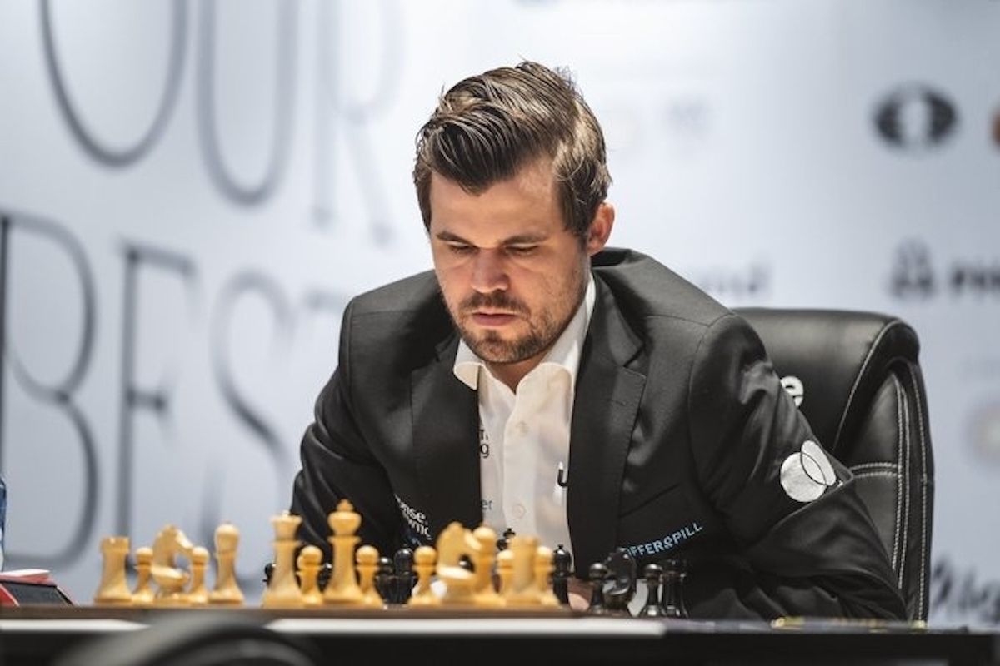
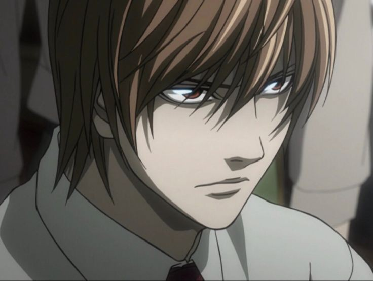
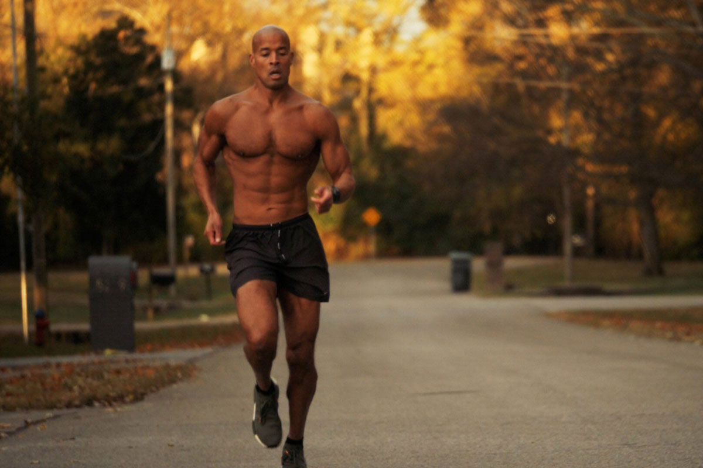
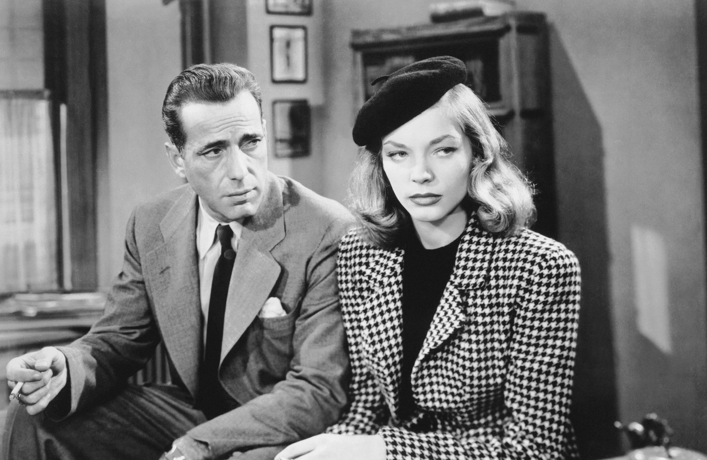
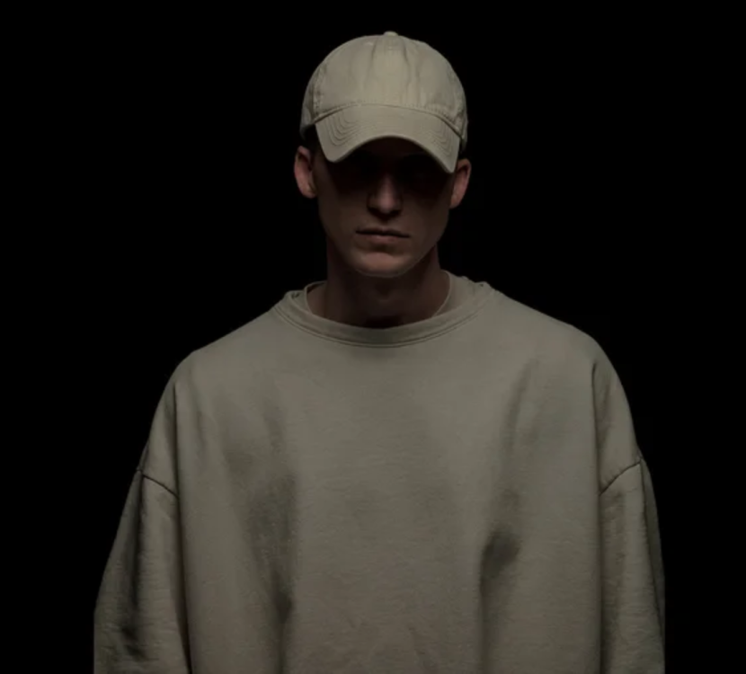

I think It was around July 2021, I got my Bachelor's degree, after a long year of home studying, I didn't get
the results i desired, but that was to be expected due to the circumstances of the last days before the exams,
and after failing to enter the High-university of Computer-science, which was my goal, I had to change the
plan and look for a normal university, and after being rejected from the famous university "USTHB", I finally
managed a place in the University of Algiers1, and here the journy starts.
October 2021, right after the University entry, I already lost hope in this place, I started learning Web
Development, it was the step one in my long term programming goals, I wasn't as mentaly strong as necessary
at that time, I strugelled mentally and emotionlly, I had no funds, the place where I live had terrible
environment, No clear future, not able to study, failing university exams, sleepless nights, everything
looks grey, lonliness for some reason, and that kept on going, until I ended up repreating the year, and not
making any progress at all, as a web developer.
If you did not achieve something you wanted, you didn't want it enough
Summer 2022, I met someone, I'm not as lonely as I was, I didn't do anything important, just killing time, hanging
out with friends, running from reality, but it was all inside of me, Fury, unsatisfaction, I realized something,
I can't live like that, It's whether I change everything or I die trying, but wait, die trying? huh? what am I talking
about, look at people, studying for 5 years to get a useless degree that will put them in prison for the rest of their
lifes, no ambition, tiny dreams, running after food, and cloths, for a temporarly satisfiction, this is so
ridiculous, what am I even doing, felt like wasted potential.
It was so simple, so abvious, I just had to push my self a little bit, but I always dragged it down, I spent all
the upcoming months fighting my old version, with this mentality, I had upps and downs, but it just made me
stronger, and with god help, I always managed to pass through, and now, it's time to change everything.
Now, after all I have been through, my point of view of life had changed, I used to think that life is like a run,
It's raining, It's dark, and you have to keep running after the light, which is your goal, and once i lost my
light, I just sat down, saying to myself what's the purpuse of running, but I was wrong, once your light is vanished,
you keep running anyways, just run in the dark, until you see another light, and if you don't, at least you died for
your cause which would feel good to people like me.
What's on my mind
Interests, Random Photos, People that inspire me..
-
Chess
I like to play chess, been playing for a while now, I really get inspired by people like Maguns Carelsn,
Bobby Fischer and others, I like their playing style and the amount of discpline they put.

-
Animes
I really like to watch animes, I find it a really inspiring work of art, especially the side of characters
personalities like Ayanokouji Kiyotaka from Classroom of the Elite
Ygagami Light from Death Note and Eren Yeager from Attack on Titans, really fun, intresting and inspiring
to watch.
-
Health and Fitness
One of the most important things to me is body look and control, I find turning your body into a peice
of art one of the essentials to turn into the best version of yourself, which is my immortal goal, and
I really am inspired by people like David Goggins  and Chris Heria
-
Science
I always liked Physics and Maths, and I still do, maybe the school didn't introduce it to us as a fun
thing, but learning the actual laws of the univers isn't only based on finding x and counting the apples,
and Space is quite an imagination field. 
-
Books and Novels
It's raining, sitting opposite the window with a cup of coffee and reading some mystery novel is a whole
diffrent vibe, I read all kinds of books, but I like most Detective and Crime Novels, like sherlock holmes,
poirot and philip marlowe.

-
Music
Music is an important part of my day, I listen to all kinds of music, but my favourite singer in NF.

-
Note
I just wanted to say that, believe it or not, you dont actually have to be miserable, maybe you feel
like you're in a prison, maybe you can't see any light, maybe you think I don't know anything about you,
you're right, I don't, but I know one thing, you can be whatever you want, It's all in your mind.